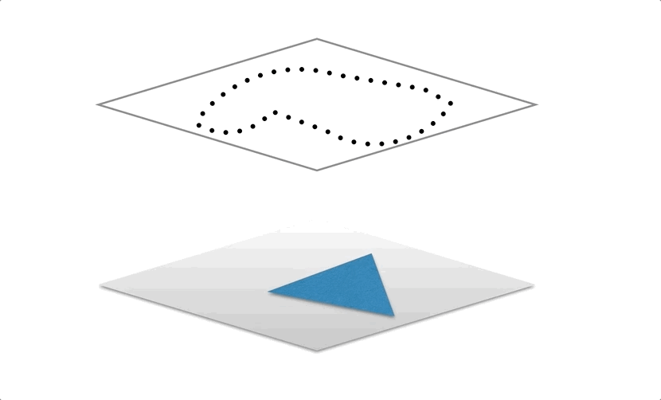

Introduction
The comparative analysis is an unbiased, consistent analysis of new biodiversity nominations, i.e. criteria (ix) and (x), against existing World Heritage sites. It has been used an important material to the IUCN World Heritage Panel. The methodology has been documented in the paper Comparative analysis methodology for World Heritage nominations under biodiversity criteria, published in 2014.
This page aims to introduce the spatial aspect of the analysis and the evolving engineering behind it.
Updates
- Some duplication but additional documentation can be found on GitHub
For past comparative analysis results, please visit section of my folder structure
Challenges
Conceptually, the idea is rather simple. At the lowest level, it involves the spatial intersection of the boundary of a given new nomination, against a base layer, and then extract some statistics. For example, overlay the terrestrial ecoregion layer with new nominations, and calculate the area and percentage of overlap.

The complexity arises when additional variables come into play.
The first challenge is the plethora of base layers required for the analysis. Despite the booming availability of global datasets on biodiversity, no data has been so far collated for the purpose of inscriptions of biodiversity World Heritage sites. The narratives around the arguments for Outstanding Universal Value do not provide a clear direction to find suitable datasets that are also spatially explicit. Thus, no single dataset can be utilised (nor should there ever be), and the decision must be deferred to the expert judgement of experienced professionals. The tasks however for the GIS analyses thus require all, to the extent possible, related datasets be overlaid and analysed.
Next, with heterogeneous data sources, different questions require different answers. For example, methodologies to answer a question about the (over)representation of a certain biogeography differ from that inquiring the indicative number of species that might be present. Some seemingly different questions can be grouped using similar processes to analyse, while others albeit sharing common traits in the narratives may dictate a drastically different methodology to be developed
Additionally, to enable comparisons, not only nominations should be overlaid, but also existing sites, sites from the Tentative List, and in some case certain protected areas may need to be considered as well. This multiplies the computational load, produces significantly more information, and complicates the process of interpretation and presentation.
Finally, the numerous, abstruse numbers must be put in a lay format that makes sense to the audience. They have to be digested and presented in a clear and logic way - it's no use to have volumes of raw results, as it will only confuse the Panel.
Bio-geographic classification, and priorities
One of the classic tasks of the comparative analysis is to look at whether a certain natural environment has been over-represented, therefore supporting an argument of refusal, as justifying it being better than those already on the List becomes significantly more difficult, as more sites crowd the already crowded space. On the contrary, if a nomination represents a previously unrepresented or under-represented space, the argument for inscribing is strengthened.
From a technical perspective, these types of comparisons are done with a simple overlay, re-using a similar template. Such data include the terrestrial/marine ecoregions, broad scale priorities such Global 200 priority, biodiversity hotspot and etc.
The current implementation relies on the PostgreSQL database and the PostGIS spatial extension. ArcGIS is optional but preferred, as it simplifies the process of importing and updating the underlying database.
The source code of the analysis can be found in detail below
In short, the script goes through the dictionary holding look-up information about each layer (name, the schema and table etc), and then intersects a 'theme' with a combined view that has both World Heritage sites and nominations with run_ca_for_a_theme, which does two tasks: a) intersect 2) group and combine the numbers. This design reflects the need to account for single part polygons and results required at different scales (for example, for terrestrial ecoregions, realms and biomes). As the last step, post_intersection_mk2 filters only those results relating to the nominated site.
To undertake the analysis, below are the steps required
- Load the newly nominated sites to the
ca_nomischema, preferably via ArcGIS, usingPG_Geometryconfiguration, so that PostGIS can read the geometry - Create in the postgres database an empty schema, to which results of the analysis would be placed, typically, this is called
ca_xxxx(xxxx refers to the year when the analysis is done) - Update the base layers if necessary
- Create a new function like below and run it
def ca_2017():
input_nomination = 'ca_nomi.nomi_2017'
output_schema = 'ca_2017'
for themekey in BASE_LOOKUP.keys():
run_ca_for_a_theme(input_nomination, output_schema, themekey, conn_arg=get_ca_conn_arg(2015))
The first line refers to the database table of the nomination. The second the location of output. The 'for' loop programatically pick each and every base layer, a.k.a., theme, to intersect with the combined view. Although only the nomination table is specified, the script knows where to find the World Heritage boundary, i.e., arcgis.v_wh_spatial. The maintenance of the World Heritage boundary is documented in the database section. Internally, the create_combined_wh_nomination_view function creates one.
It is important to note that an arbitrary threshold of 0.05 is employed to minimise commission errors.
Increased productivity
The above process can be improved simply by running the run_ca_for_a_theme simultaneously. One example is listed below (the 2017 comparative analysis)
def f(themekey):
input_nomination = 'ca_nomi.nomi_2017_with_supp'
output_schema = 'ca_2017_with_supp'
run_ca_for_a_theme(input_nomination, output_schema, themekey, conn_arg=get_ca_conn_arg(2015))
# wrap in main
if __name__ == '__main__':
p = Pool(10)
keys = BASE_LOOKUP.keys()
print keys
print(p.map(f,keys))
Tentative list sites
If one were to look deeper, both the World Heritage sites and tentative lists don't change, at least not constantly. Thus the results could cached, i.e., there is no need to re-do the overlay between them the many base layers. Whenever a comparison is needed, I can simply query the cache and pull out relevant records. This is especially true for tentative list sites, which tend to stay the same for years.
For tentative list sites, the run_ca_tentative utilises the same logic in the above methodology and produce a set of database views holding dynamic results
Export to excel
With the results fully generated in the database, I built a process to stitch relevant tables, including lookup tables for contextual information, and export excel formats to aid interpretation.
Each nomination has an excel table with three tabs, referring to 'biogeographic', 'priority', and 'site-level' respectively.
The 2017 script can be found below
For the export to work, the following information needs to be specified in the script. The below is taken from the 2017 script
# 2017
COMBINED_WH_NOMINATION_VIEW = 'z_combined_wh_nomination_view'
WH_ATTR = 'arcgis.v_wh_non_spatial_full' # attribute look up table for world heritage
TLS_SHAPE = 'tls.tentative' # tentative list site table
OUTPUT_SCHEMA = 'ca_2017_with_supp' # the location of where the output tables are stored
TLS_SCHEMA = 'ca_tls' # the location of where the output table for tentative list sites are stored
TLS_ORGIN = 'tls.origin' # the original tentative list sites table, for looking up criteria information
# List of nomination IDs
NOMI_ID = range(9991701, 9991706) + range(99917011, 99917015) + range(99917021, 99917023)
Lastly, specify the location of the output outputfolder
if __name__ == '__main__':
outputfolder=r"E:\Yichuan\Comparative_analysis_2017"
main(outputfolder)
Full result export
To accommodate needs to go beyond the question of 'what they are', though uncommon, questions also arise regarding the actual proportion of overlap. This effectively requires a full dump of the database with all results - this can be cumbersome to read.
Since 2016, this functionality has been added in a separate script, called comparative_analysis_to_excel_fullresults(source code). The principal idea is to dump original results of each base layer into tabs in an excel table, in which the overlap in area and proportion are recorded. This is meant to be used as a reference in cases where apparent overlaps may be questionable or justifying findings that are counter-intuitive.
Species richness
To counter the often inflated number of species reported in nomination dossiers, a consistent metric has been developed that counts the indicative species richness by interrogating the IUCN Red List of Threatened Species. This presents an opportunity of examining comparatively the abundance of biodiversity through surrogates of comprehensively assessed species, particularly useful for criterion (x)
The IUCN Red List of Threatened Species has a spatially explicit database that could be requested from its website or directly from the Red List Unit. The usual practice is to include only species range polygons of presence 1 and 2, origin 1 and 2, and seasonality 1, 2, and 3. Clean the database by repairing and dicing if necessary. If not present already, create an index on the field id_no that uniquely identifies a species. This speeds up the analysis considerably.
The next step is to programatically call arcpy.SelectLayerByLocation for each species and the World Heritage sites and nominations. It may take a long time to go through every one of the 70k+ species with boundaries. The end result is a two column table recording the id_no for species and wdpaid for WH sites and nominations.
Load the resulting table and the non-spatial Red List data to the same PostgreSQL database with rest of the results. The species richness makes lots of assumption and refers to the same look up tables in the section on Bio-geographic classification, and priorities
The following information need to be specified in the script comparative_analysis/comparative_analysis_group_species.py (source code), which retrieves information from lookup tables and generate a master view with different species richness count for different taxonomies (including only those that are threatened)
# the resulting richness analysis table
all_sp = "ad_hoc.species_ca_2017"
all_sp_taxonid = 'species_ca_2017.id_no' # must not be the same as all_sis_taxonid
all_sp_baseid = 'species_ca_2017.wdpaid'
# look up table, non spatial version of the input Red List data
all_sis = "ad_hoc.rl_2017_2_pos"
all_sis_taxonid = "rl_2017_2_pos.id_no"
# WH/nomi name look up table
# NOTE: assuming wdpaid is present!!!!!
wh_nomi_lookup = "ca_2017_with_supp.z_combined_wh_nomination_view"
wh_nomi_name = "z_combined_wh_nomination_view.en_name"
# name
KINGDOM_FIELD = 'kingdom'
CLASS_FIELD = 'class'
BINOMIAL_FIELD = 'binomial'
RL_FIELD = 'code'
Lastly, specify the output schema, typical the same location as the one for the biogeographic/priority results
main('ca_2017_with_supp')
The technical implementation is also documented in the richness template section in geoprocessing
Irreplaceability
The irreplaceability utilised the methodology published at Science.
The shortcoming of using the Red List range polygons is rather obvious: it does little to mitigate the effect of over-estimation of their Area of Occupancy (AOO) and that richness counts almost certainly inflate the actual number of species. The irreplaceability metric overcomes this by using sigmoid functions to translate actual proportional overlaps and aggregate to a single value that, to a certain extent, captures both richness and endemism.
The implementation can be found below (source code)
def species_irreplaceability(x):
"""x is the percentage in decimal"""
x = x*100
def h(x):
# h(x) as specified
miu = 39
s = 9.5
tmp = -(x - miu)/ s
denominator = 1 + np.exp(tmp)
return 1/denominator
return (h(x) - h(0))/(h(100) - h(0))
Because the irreplaceability analysis builds on the full intersection between the WDPA and the Red List (the pairwise percentage overlap value), which is in itself a massive undertaking, I cannot re-run irreplaceability without being given the result of the full intersection first. For this reason, up to this day, only two runs exist (the latest updated in 2015, which we rely on).
Static maps
Maps accompany the comparative analysis are authored using ArcMap, and later ArcPro.
The template is pre-authored and re-used across all maps, although labelling and styles may be dynamically adjusted. To the extent possible, I try to automate the production of maps. In ArcMap, this is done via arcpy.mapping package that produces maps by iterating each feature in the nomination feature class. The export process outputs any format supported by ArcMap, usually in PNG for the reports or AI/EPS/PDF for printing. The source code could be found in the geoprocessing section
Later, new capabilities in ArcPro make the above process obsolete. There is no need any more to write any code. The iteration instead require a pre-cooked extent feature class be create to represent the viewport of maps. The default data-driven pages can loop through each extent feature and export maps of desired formats. Worth mentioning is that PDF format maps also have the ability to turn on and off layers, that in a way mimics behaviours of a dynamic maps, giving readers powers to interrogate the map for information.
The 2017 static maps can be found below:
Interactive maps
TO BE ADDED
Conclusion
In hindsight, the analysis using intersections is slightly over-engineered. The original implementation relies entirely on SQLs, which had severe shortcomings that flow control was extremely inflexible in a pure SQL environment. Python, being a generic glue language, was picked to generate SQL statement and feed to the database management system. The result is a somewhat haphazard concoction of spaghetti codes, with unnecessarily engineered towards objective-oriented design.
For future improvement, a pure function based structure may be a better alternative. Or, considering the massive improvement of the arcpy library and the fine controls of geometry it now has, it may be wise to migrated back to an esri based system, which may be easier to manage, unifying the database management and the analysis. Further debate on pros and cons is required - going back to a solution based on proprietary software seems counter-intuitive in the present day of open data and open science.